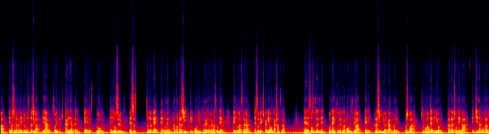
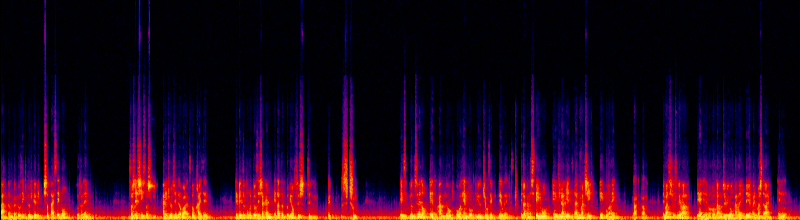

(LUFS)
(dBTP)




| 版 | 処理内容 | 音量 (LUFS) | 真のピーク (dBTP) | 個別再生 | スペクトログラム(縦=周波数・明るい=大きい) |
|---|---|---|---|---|---|
| A1 元+音量合わせ | 処理なし。音量だけ他と同じ値に揃えたもの(=比較の基準) | -16.0 | -4.4 | | |
| B 控えめ補正 | 90Hz以下カット(空調・机の振動)/軽いノイズ低減(afftdn nr=10)/250Hz付近-2dB(こもり)/3kHz付近+2dB(子音の明瞭さ)/軽いディエッサー | -16.0 | -2.7 | | |
| C 強め補正 | 100Hz以下カット/ノイズ低減を強め(afftdn nr=20+非局所平均)/250Hz-3dB/3kHz+3dB/ディエッサー強め。不自然さ(水中っぽさ・こもり)が出やすい設定 | -16.0 | -2.0 |  | |
| A0 元のまま | YouTubeから取った音声そのまま。音量が他より小さいので、比較の基準にはA1を使う | -16.8 | -5.2 | |
| 版 | 処理内容 | 音量 (LUFS) | 真のピーク (dBTP) | 個別再生 | スペクトログラム(縦=周波数・明るい=大きい) |
|---|---|---|---|---|---|
| A1 元+音量合わせ | 処理なし。音量だけ他と同じ値に揃えたもの(=比較の基準) | -16.0 | -3.1 |  | |
| B 控えめ補正 | 90Hz以下カット(空調・机の振動)/軽いノイズ低減(afftdn nr=10)/250Hz付近-2dB(こもり)/3kHz付近+2dB(子音の明瞭さ)/軽いディエッサー | -16.0 | -2.0 |  | |
| C 強め補正 | 100Hz以下カット/ノイズ低減を強め(afftdn nr=20+非局所平均)/250Hz-3dB/3kHz+3dB/ディエッサー強め。不自然さ(水中っぽさ・こもり)が出やすい設定 | -16.0 | -1.2 |  | |
| A0 元のまま | YouTubeから取った音声そのまま。音量が他より小さいので、比較の基準にはA1を使う | -17.2 | -4.3 |  |
器は1080×1920ですが、顔のあたりの中身は半分の解像度に落としても元とほぼ同じ(PSNR 41dB)で、実効的には540p相当の柔らかい映像です(テロップ部分で同じ検査をすると大きく崩れるので、検査方法は妥当)。足りないのは画素数でなく撮影時の細部なので、後処理で自然に取り戻す方法はありません。
下は顔部分(等倍)に非AIのシャープ処理をかけた比較。左から 元 / CAS 0.6 / アンシャープ 0.8 / ノイズ低減+CAS。輪郭が少し立つ程度で、劇的には変わりません。

AI超解像(Topaz Video AI・Real-ESRGAN等)は顔の細部を「描き足す」ため、本人と違う顔になる・絵のように見える不自然さが出やすく、選挙期の市長の映像では改変と受け取られる懸念もあるので勧めません。自然な改善策は①元の撮影データ(横長・4K等)があればそこから作り直す、②軽いシャープ+1440p/4Kにして再アップし、YouTubeの高ビットレート枠で圧縮のにじみを減らす、の2つです。